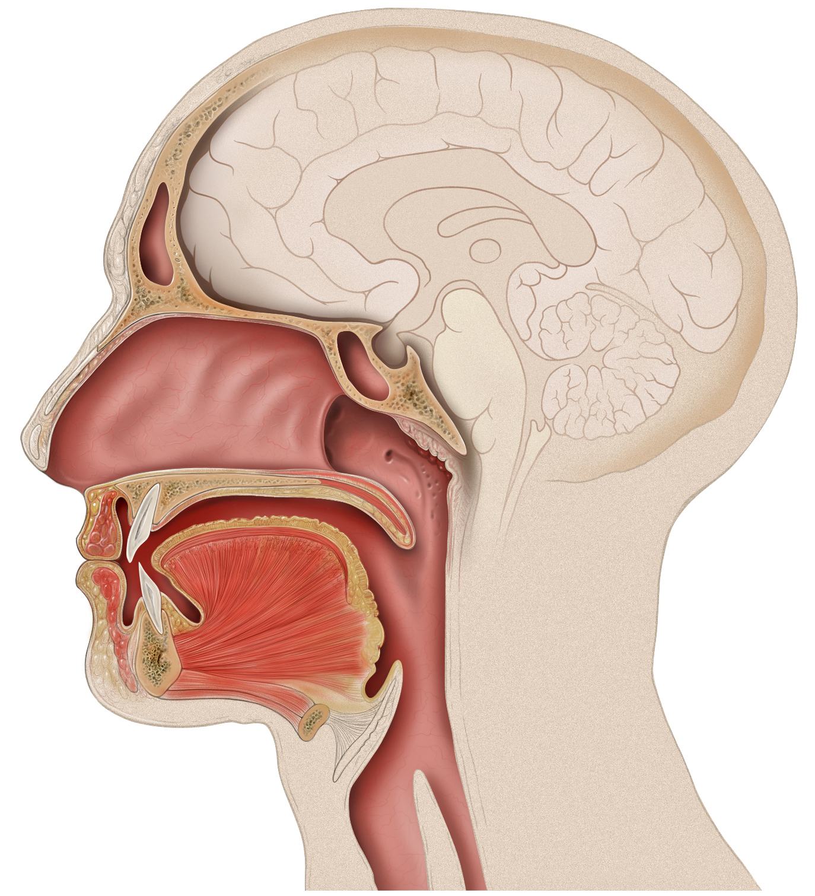

BocaLa boca forma parte del sistema estomatognático y es la vía de acceso al aparato digestivo, lo que marca el tipo de funciones que realiza. Las principales funciones de la boca son: Función digestiva: la boca permite masticar y moler los alimentos, mezclarlos con saliva y tragarlos, además de posibilitar la succión. Clica aqui para saber mas Volver |